asg_raupi_3x_samples: 8date: 2022-06-13 11:35:59.536497 | max: 355 min: 30 mean: 274 |
max: 3218 min: 2746 mean: 2969 |
max: 85.86 min: 79.23 mean: 83.07 |
max: 1502 min: 1002 mean: 1263 | ||
| 1: 2022.03.18_02-19_asg_raupi_3x_f03c | cpu=35 pods=0 treads=25 sc_min=14 warmup=90 | Dura-tion s | qps | CPU % | Err | |
| 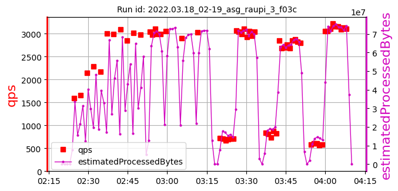 | 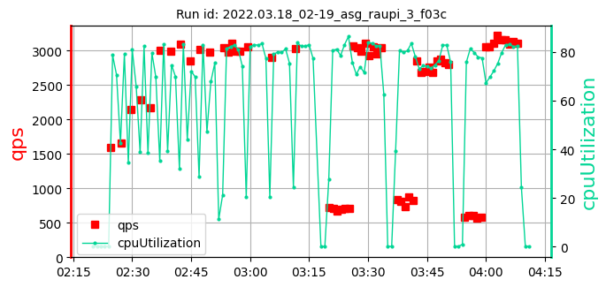 | 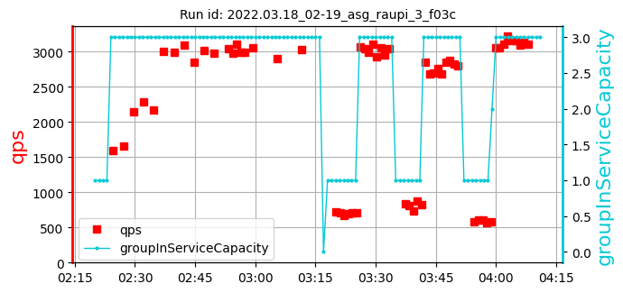 | [355, 281, 324] 320 | [3056, 2905, 3028] 2996 | [83.1, 80.33, 82.57] 82.00 | 1008 |
| 2: 2022.04.18_20-43_asg_raupi_3x_41cf | cpu=35 pods=0 treads=25 sc_min=14 warmup=90 | Dura-tion s | qps | CPU % | Err | |
| 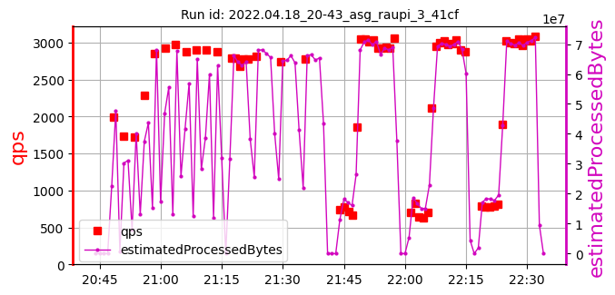 | 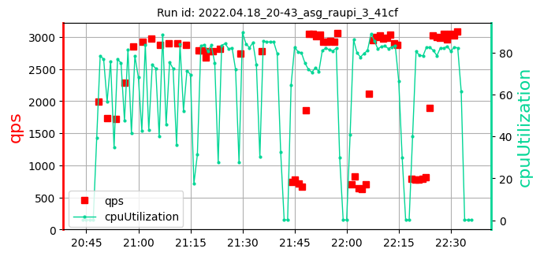 | 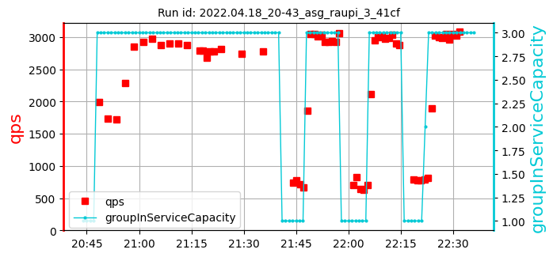 | [234, 275, 256] 255 | [2820, 2746, 2782] 2783 | [82.74, 83.72, 84.99] 83.81 | 1502 |
| 3: 2022.04.19_19-40_asg_raupi_3x_41cf | cpu=35 pods=0 treads=25 sc_min=14 warmup=90 | Dura-tion s | qps | CPU % | Err | |
| 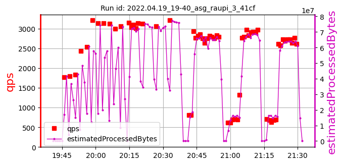 | 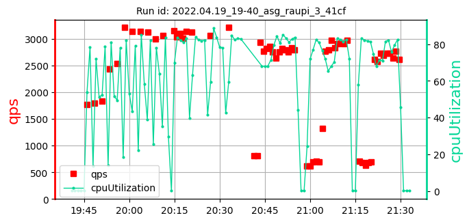 | 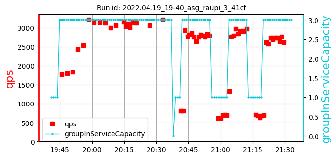 | [30, 304, 224] 186 | [3129, 3063, 3218] 3137 | [82.78, 83.55, 83.43] 83.25 | 1417 |
| 4: 2022.04.21_03-19_asg_raupi_3x_41cf | cpu=35 pods=0 treads=25 sc_min=14 warmup=90 | Dura-tion s | qps | CPU % | Err | |
| 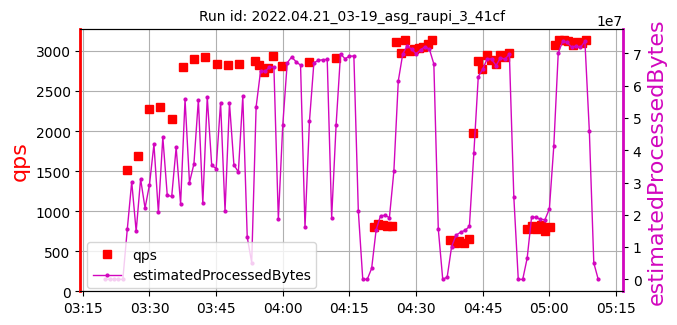 | 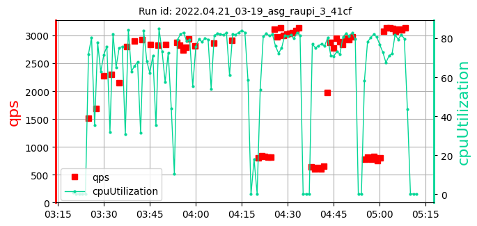 | 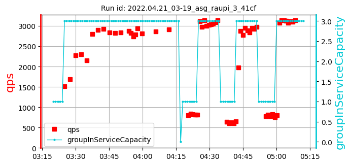 | [272, 256, 297] 275 | [2816, 2869, 2913] 2866 | [79.23, 82.14, 82.99] 81.45 | 1213 |
| 5: 2022.04.22_00-42_asg_raupi_3x_41cf | cpu=35 pods=0 treads=25 sc_min=14 warmup=90 | Dura-tion s | qps | CPU % | Err | |
| 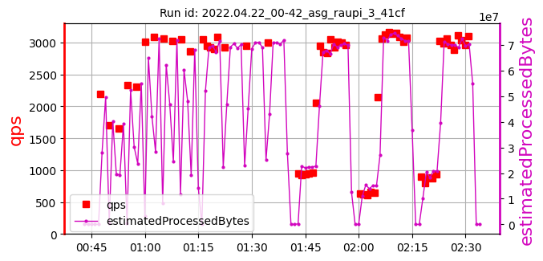 | 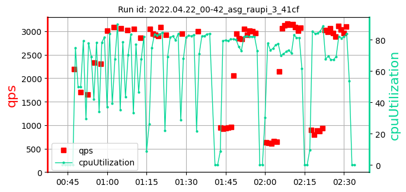 | 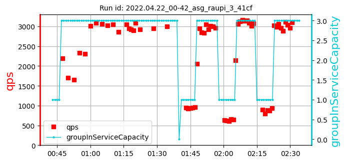 | [298, 340, 323] 320 | [2928, 2947, 2997] 2957 | [81.27, 82.27, 82.91] 82.15 | 1002 |
| 6: 2022.05.13_08-34_asg_raupi_3x_41cf | cpu=35 pods=0 treads=25 sc_min=14 warmup=90 | Dura-tion s | qps | CPU % | Err | |
| 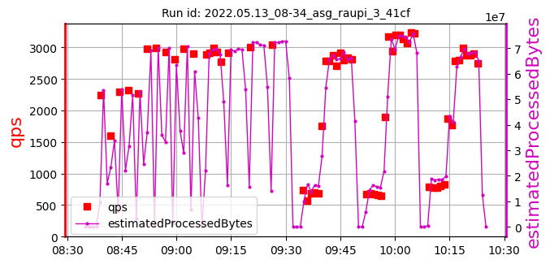 | 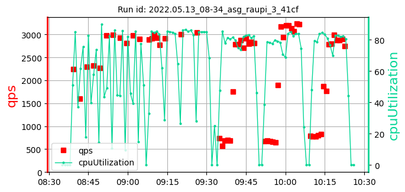 | 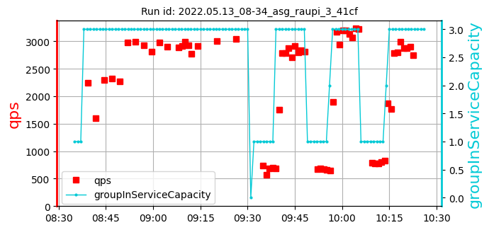 | [248, 292, 335] 291 | [2918, 3009, 3045] 2990 | [84.63, 85.86, 85.01] 85.17 | 1316 |
| 7: 2022.05.15_01-10_asg_raupi_3x_41cf | cpu=35 pods=0 treads=25 sc_min=14 warmup=90 | Dura-tion s | qps | CPU % | Err | |
| 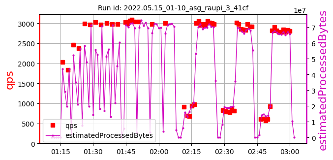 | 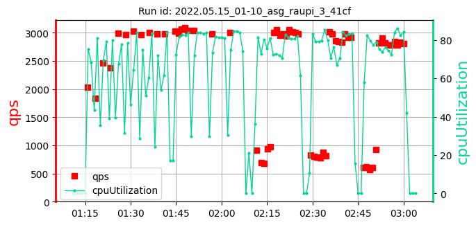 | 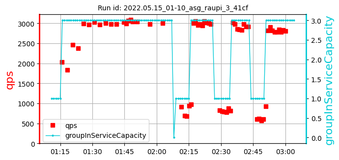 | [271, 336, 257] 288 | [3039, 2980, 3011] 3010 | [83.62, 81.47, 84.33] 83.14 | 1214 |
| 8: 2022.05.18_20-34_asg_raupi_3x_d390 | cpu=35 pods=0 treads=25 sc_min=14 warmup=90 | Dura-tion s | qps | CPU % | Err | |
| 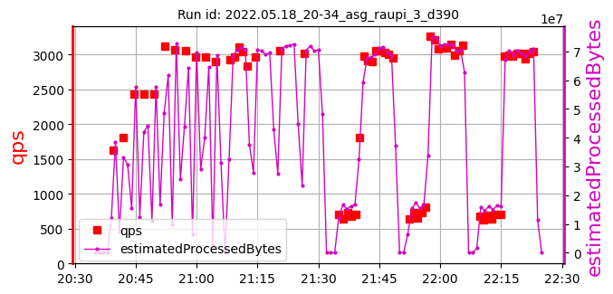 | 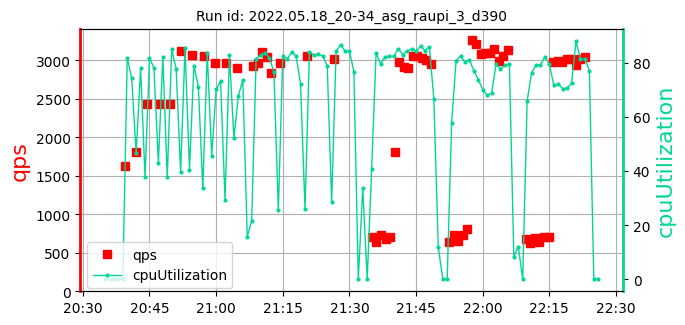 | 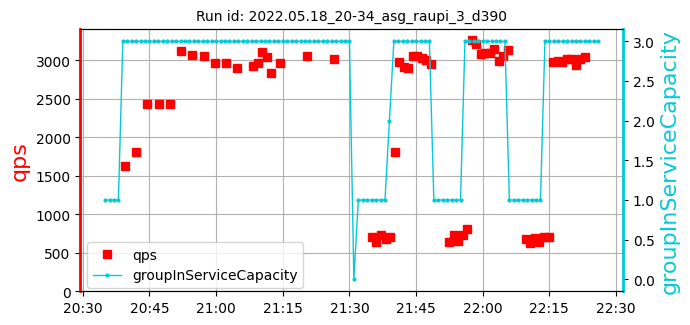 | [296, 217, 258] 257 | [2965, 3056, 3023] 3015 | [82.64, 82.91, 85.16] 83.57 | 1431 |
asg_raupi_3x_samples: 8date: 2022-06-13 11:35:59.536497 | max: 355 min: 30 mean: 274 |
max: 3218 min: 2746 mean: 2969 |
max: 85.86 min: 79.23 mean: 83.07 |
max: 1502 min: 1002 mean: 1263 |